전자기사 (2018-03-04 기출문제)
1과목: 전기자기학
1. 그림과 같이 반지름 a(m)의 한번 감긴 원형코일이 균일한 자속밀도 B(Wb/m2)인 자계에 놓여 있다. 지금 코일 면을 자계와 나란하게 전류 I(A)를 흘리면 원형코일이 자계로부터 받는 회전 모멘트는 몇 N･m/rad인가?
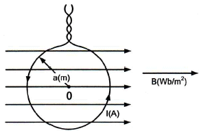
- πaBI
- 2πaBI
- πa2BI
- 2πa2BI
(정답률: 46%)

2. 그림과 같이 단면적 S=10[cm2], 자로의 길이 =20π[cm], 비유전율 μs=1000인 철심에 N1=N2=100인 두 코일을 감았다. 두 코일사이의 상호인덕턴스는 몇 mH 인가?
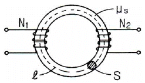
- 0.1
- 1
- 2
- 20
(정답률: 39%)
3. 다음 조건들 중 초전도체에 부합되는 것은?(단, μr은 비투자율, xm은 비자화율, B는 자속밀도이며 작동온도는 임계온도 이하라 한다.)
- xm=-1, μr=0, B=0
- xm=0, μr=0, B=0
- xm=1, μr=0, B=0
- xm=-1, μr=1, B=0
(정답률: 25%)
4. 자속밀도 10Wb/m2 자계 중에 10cm 도체를 자계와 30°의 각도로 30m/s 로 움직일 때, 도체에 유기되는 기전력은 몇 V 인가?
- 15
- 15√3
- 1500
- 1500√3
(정답률: 41%)
5. 내부장치 또는 공간을 물질로 포위시켜 외부자계의 영향을 차폐시키는 방식을 자기차폐라 한다. 다음 중 자기차폐에 가장 좋은 것은?
- 비투자율이 1 보다 작은 역자성체
- 강자성체 중에서 비투자율이 큰 물질
- 강자성체 중에서 비투자율이 작은 물질
- 비투자율에 관계없이 물질의 두께에만 관계되므로 되도록 두꺼운 물질
(정답률: 50%)
6. 40V/m인 전계 내의 50V되는 점에서 1C의 전하가 전계 방향으로 80cm 이동하였을 때, 그 점의 전위는 몇 V 인가?
- 18
- 22
- 35
- 65
(정답률: 50%)
7. 1μA의 전류가 흐르고 있을 때, 1초 동안 통과하는 전자 수는 약 몇 개 인가?(단, 전자 1개의 전하는 1.602×10-19C 이다.)(오류 신고가 접수된 문제입니다. 반드시 정답과 해설을 확인하시기 바랍니다.)
- 6.24×10-10
- 6.24×10-11
- 6.24×10-12
- 6.24×10-13
(정답률: 55%)
8. 내압 1000V 정전용량 1μF, 내압 750V 정전용량 2μF, 내압 500V 정전용량 5μF인 콘덴서 3개를 직렬로 접속하고 인가전압을 서서히 높이면 최초로 파괴되는 콘덴서는?
- 1μF
- 2μF
- 5μF
- 동시에 파괴된다.
(정답률: 59%)
9. 평면도체 표면에서 r(m)의 거리에 점전하 Q(C)이 있을 때 이 전하를 무한원까지 운반하는데 필요한 일은 몇 J 인가?
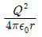
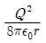
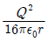
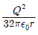
(정답률: 58%)
10. 역자성체에서 비투자율(μs)은 어느 값을 갖는가?
- μs = 1
- μs ＜ 1
- μs＞1
- μs = 0
(정답률: 60%)
11. 비유전율 εr1, εr2인 두 유전체가 나란히 무한평면으로 접하고 있고, 이 경계면에 평행으로 유전체의 비유전율 εr1내에 경계면으로부터 d(m)인 위치에 선전하 밀도 ρ(C/m)인 선상전하가 있을 때, 이 선전하와 유전체 εr2간의 단위 길이당의 작용력은 몇 N/m 인가?
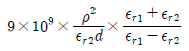
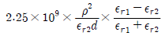
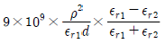
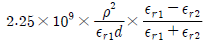
(정답률: 46%)
12. 유전율이 εr1, εr2인 (F/m)인 유전체 경계면에 단위면적당 작용하는 힘은 몇 N/m2 인가?(단, 전계가 경계면에 수직인 경우이며, 두 유전체의 전속밀도 D1=D2=D이다.)
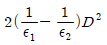
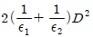
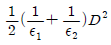
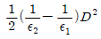
(정답률: 54%)
13. 진공 중에 균일하게 대전된 반지름 a(m)인 선전하 밀도 λl(C/m)의 원환이 있을 때, 그 중심으로부터 중심축상 x(m)의 거리에 있는 점의 전계의 세기는 몇 V/m 인가?
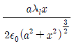
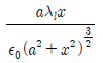
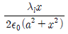
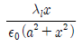
(정답률: 50%)
14. 점전하에 의한 전계는 쿨롱의 법칙을 사용하면 되지만 분포되어 있는 전하에 의한 전계를 구할 때는 무엇을 이용하는가?
- 렌츠의 법칙
- 가우스의 법칙
- 라플라스 방정식
- 스토크스의 정리
(정답률: 53%)
15. x=0인 무한평면을 경계면으로 하여 x＜0인 영역에는 비유전율 εr1=2, x＞0인 영역에는 εr2=4인 유전체가 있다. εr1인 유전체내에서 전계 E1=20ax-10ay+5az(V/m)일 때 x＞0인 영역에 있는 εr2인 유전체내에서 전속밀도 D2(C/m2)는? (단, 경계면상에는 자유전하가 없다고 한다.)
- D2=ε0(20ax-40ay+5az)
- D2=ε0(40ax-40ay+20az)
- D2=ε0(80ax-20ay+10az)
- D2=ε0(40ax-20ay+20az)
(정답률: 34%)
16. 평면파 전파가 E=30cos(109t+20z)jV/m로 주어 졌다면 이 전자파의 위상 속도는 몇 m/s인가?
- 5×107
- (1/3)×108
- 109
- 2/3
(정답률: 21%)
17. 공기 중에 있는 지름 6cm인 단일 도체구의 정전용량은 약 몇 pF 인가?
- 0.34
- 0.67
- 3.34
- 6.71
(정답률: 51%)
18. 한 변의 길이가 10cm인 정사각형 회로에 직류전류 10A가 흐를 때, 정사각형의 중심에서의 자계 세기는 몇 A/m 인가?
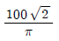
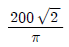
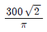
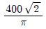
(정답률: 58%)
19. 패러데이관(Faraday tube)의 성질에 대한 설명으로 틀린 것은?
- 패러데이관 중에 있는 전속수는 그 관속에 진전하가 없으면 일정하며 연속적이다.
- 패러데이관의 양단에는 양 또는 음의 단위 진전하가 존재하고 있다.
- 패러데이관 한 개의 단위 전위차 당 보유에너지는 1/2(J)이다.
- 패러데이관의 밀도는 전속밀도와 같지 않다.
(정답률: 60%)
20. 균일하게 원형단면을 흐르는 전류 I(A)에 의한, 반지름 a(m), 길이 ℓ(m), 비투자율 μs인원통도체의 내부 인덕턴스는 몇 H 인가?
- 10-7μsℓ
- 3 × 10-7μsℓ
- (1/4a) × 10-7μsℓ
- (1/2) × 10-7μsℓ
(정답률: 38%)
2과목: 회로이론
21. 1μF인 정전용량을 가지는 콘덴서에 실효값 1414V, 주파수 10kHz, 위상각 0°인 전압을 가했을 때, 순시값 전류는 약 몇 A 인가?
- 89 sin (ωt-90°)
- 89 sin (ωt+90°)
- 126 sin (ωt-90°)
- 126 sin (ωt+90°)
(정답률: 38%)
22. 다음과 같은 회로에서 t=0에서 스위치(K)가 닫혔다. 전류의 파형이 오실로스코프에 나타났을 때 전류의 초기값이 10mA로 측정되었을 경우, i(t)의 식으로 옳은 것은?
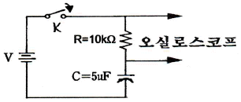
- i(t)=102e-10t[A]
- i(t)-10-1e20t[A]
- i(t)=10-2e-20t[A]
- i(t)=10e10t[A]
(정답률: 45%)
23. 그림과 같은 주기성을 갖는 구형파 교류 전류의 실효치는 몇 A 인가?
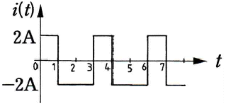
- √2
- 2
- 3
- 4
(정답률: 50%)
24. 감쇄계수(Damping factor) ζ가 0.⑤인 RL직렬 공진회로의 선택도(Q) 값은?
- 10
- 15
- 20
- 30
(정답률: 22%)
25. 감쇄여현파 함수 5-5tcos2t의 라플라스 변환은?(오류 신고가 접수된 문제입니다. 반드시 정답과 해설을 확인하시기 바랍니다.)
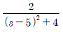
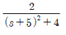
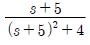
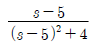
(정답률: 50%)
26. 상수 1을 Fourier로 변환하면?
- δ(ω)
- πδ(ω)
- (1/2)πδ(ω)
- 2πδ(ω)
(정답률: 20%)
27. RLC 직렬회로가 유도성 회로일 경우에 대한 설명 중 옳은 것은?
- 전류는 전압보다 뒤진다.
- 전류는 전압보다 앞선다.
- 전류와 전압은 동위상이다.
- 공진이 되어 지속적으로 발진한다.
(정답률: 56%)
28. 이상적인 변압기의 권수비(ratio of turns) n을 수식으로 표현한 경우 틀린 것은?
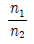
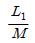
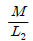
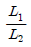
(정답률: 46%)
29. 교류 전압 220 V를 인덕턴스 0.1H의 코일에 인가하였을 때 이 코일에 흐르는 전류는? (단, 주파수는 60Hz 이다.)
- 5.84 /-90°
- 5.84 /0°
- 22 /-90°
- 22 /0°
(정답률: 56%)
30. 그림의 회로망에서
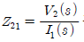
는?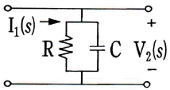
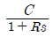
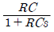
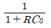
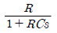
(정답률: 37%)
31. 10μF인 콘덴서에 v=2sin2π10t[V]의 전압을 인가할 때, t=0에서의 전류는 몇 mA 인가?
- 0
- 0.1
- 1.26
- 12.57
(정답률: 40%)
32. 2단자 임피던스 함수가
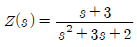
일 때 극점(pole)은?- -3
- 0
- -1, -2
- -1, 2
(정답률: 59%)
33. I1=2j3I2=1+j 일 때 합성 전류의 크기(I)는 몇 A 인가?(오류 신고가 접수된 문제입니다. 반드시 정답과 해설을 확인하시기 바랍니다.)
- 5
- 4
- 3
- 2
(정답률: 50%)
34. 이상적인 전류원의 내부 임피던스(Z)의 값으로 옳은 것은?
- ∞
- 0
- 1Ω
- Z는 정해지지 않는다.
(정답률: 50%)
35. 어떤 회로망의 4단자정수가 A=8, B=j2, D=3+j2 이면 이 회로망의 C는?
- 3-j4.5
- 4+j6
- 8-j11.5
- 24+j14
(정답률: 52%)
36. 아래 회로는 어떤 필터에 해당하는가?
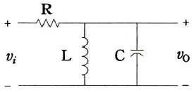
- 저대역통과필터(low-pass filter)
- 고대역통과필터(high-pass filter)
- 대역통과필터(band-pass filter)
- 대역제한필터(band-rejection filter)
(정답률: 57%)
37. 임피던스 함수
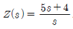
로 표시되는 2단자 회로망을 도시하면?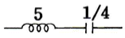
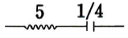
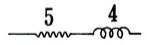
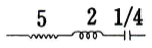
(정답률: 45%)
38. 단위계단함수의 라플라스 변환은?
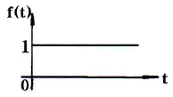
- 1
- s
- 1/s
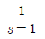
(정답률: 29%)
39. 다음의 회로망에서 a, b간의 단자전압이 50V이고 a,b에서 본 임피던스가 6+j8[Ω]이다. a, b 단자에 임피던스 Ż=2-j2[Ω]을 연결하였을 때 흐르는 전류는 몇 A 인가?
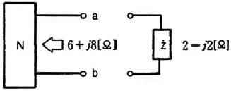
- 3
- 5
- 7
- 10
(정답률: 61%)
40. 그림의 회로에서 릴레이의 동작 전류는 10[mA], 코일의 저항은 1[kΩ], 인덕턴스는 L[H]이다. 스위치(S)가 닫히고 18[ms] 이내로 이 릴레이가 작동하려면 L[H]은 약 몇 H 인가?
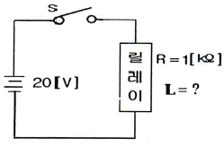
- 18
- 26
- 34
- 56
(정답률: 36%)
3과목: 전자회로
41. 트랜지스터가 차단 상태일 때의 조건은? (단, IC는 컬렉터 전류, IE는 이미터 전류, ICO는 컬렉터 차단전류이다.)
- ICO = IE
- IE = 0과 IC = ICO
- IE = 0과 IC = 0
- IE ≠ 0과 IC = ICO
(정답률: 44%)
42. FET와 BJT의 전기적 특성을 비교했을 때 적합하지 않은 것은?
- FET는 BJT보다 잡음이 적다.
- FET는 BJT보다 입력임피던스가 작다.
- FET는 BJT보다 이득 대역폭이 작다.
- FET는 BJT보다 온도변화에 른 안정성이 높다.
(정답률: 36%)
43. A급 증폭기에 대한 설명 중 틀린 것은?
- 충실도가 좋다
- 효율은 50% 이하이다.
- 차단(cut off) 영역 부근에서 동작한다.
- 평균 전력손실이 B급이나 C급에 비해 크다.
(정답률: 46%)
44. JK 플립플롭의 현재 상태(Qn)가 0 일 때 입력이 J=1, K=1이라면 다음 상태(Qn+1)는?
- Qn+1=1,
 n+1=0
n+1=0 - Qn+1=0,
 n+1=1
n+1=1 - Qn+1=0,
 n+1=0
n+1=0 - Qn+1=1,
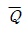
n+1=1
(정답률: 42%)
45. 직렬형 전압조정기 회로에서 출력전압은? (단, 제너전압 VR은 5.1V 이고, R1=1kΩ, R2=R3=10kΩ이다.)
- 5.1 V
- 10.2 V
- 15.3 V
- 18.2 V
(정답률: 46%)
46. 미분기의 출력과 입력은 어떤 관계인가?
- 출력은 입력의 변화율에 비례한다.
- 출력은 입력의 변화율에 무관하다.
- 출력은 입력의 변화율에 반비례한다.
- 출력은 입력의 변화율의 제곱에 반비례한다.
(정답률: 46%)
47. 다음 그림과 같은 IC 555 타이머를 이용한 펄스발생회로에서 Vcc=5V, R1=10kΩ, R2=10kΩ, CT=0.02μF, C=0.01μF일 때, 출력파형의 펄스폭(τ)과 주파수(f)는 얼마인가?(단, 다이오드의 순방향 저항은 0으로 간주하고 ln2=0.7로 적용한다.)
- τ = 140μs, f = 4.76kHz
- τ = 280μs, f = 2.38kHz
- τ = 70μs, f = 7.14kHz
- τ = 140μs, f = 3.57kHz
(정답률: 33%)
48. 다음 회로도 설명 중 가장 적당한 것은?
- 저역통과필터
- 고역통과필터
- 대역통과필터
- 대역정지필터
(정답률: 48%)
49. 수정발진기의 특징으로 가장 적합한 것은?
- 가변성
- 안전성
- 경제성
- 높은 발진 주파수
(정답률: 50%)
50. 3배 전압기의 입력 전압이 10Vs일 때 직류 출력의 최대값은 약 몇 V 인가?
- 27.9
- 30.2
- 32.1
- 42.4
(정답률: 38%)
51. 연산증폭기를 이용한 슈미트(Schmitt) 트리거회로를 사용하는 목적으로 가장 적합한 것은?
- 톱니파를 만들기 위하여
- 정전기를 방지하기 위하여
- 입력신호에 대하여 전압보상을 하기 위하여
- 입력전압 노이즈에 의한 오동작을 방지하기 위하여
(정답률: 47%)
52. 그림의 BJT 증폭기의 소신호 모델에서 전압이득(Av)는?
- gmro
(정답률: 36%)
53. 다음 회로 중 입력 신호의 (+), (-)의 피크를 어느 기준 레벨로 바꾸어 고정시키는 회로는?
- 클램퍼
- 클리퍼
- 리미터
- 필터
(정답률: 50%)
54. 다음 정전압회로에서 입력전압이 18V, 제너전압이 10V, 제너 다이오드에 흐르는 전류가 25mA, 부하저항이 100Ω일 때 저항(R1)은 몇 Ω인가?
- 20
- 64
- 126
- 200
(정답률: 43%)
55. 다음 그림에서 점유율(duty cycle)을 나타내는 식은?
- τ/B
- E/B
- τ/T
- E/T
(정답률: 60%)
56. JK 플립플롭의 J와 K 입력단자를 하나로 묶어 놓은 플립플롭으로 1을 인가하면 출력이 토글 되는 플립플롭은?
- RS 플립플롭
- D 플립플롭
- T 플립플롭
- RS 주종형(master-slave) 플립플롭
(정답률: 61%)
57. 트랜지스터의 고주파 특성으로 차단주파수(fa)는?
- 베이스 주행시간에 비례한다.
- 베이스 폭의 제곱에 비례한다.
- 정공의 확산계수에 반비례한다.
- 베이스 폭의 제곱에 반비례하고 정공의 확산계수에 비례한다.
(정답률: 48%)
58. 어떤 증폭기의 개(open)루프 중간영역 이득(Aopen-loop(mid))가 150000을 가지고, 개루프 3[dB] 대역폭은 200Hz이다. 귀환 루프 감쇠율(B)은 0.002이다. 폐루프 대역폭(BWclosed-loop)은 얼마인가?
- 300[Hz]
- 3030[kHz]
- 600[kHz]
- 60.2[kHz]
(정답률: 16%)
59. 이미터 접지 증폭기 회로에서 이미터 바이패스 콘덴서가 제거되면 어떤 현상이 생기는가?
- 발진이 일어난다.
- 잡음이 증가한다.
- 이득이 감소한다.
- 충실도가 감소된다.
(정답률: 34%)
60. 다음 회로에 입력으로 정현파를 인가했을 때 출력 파형으로 옳은 것은?(단, 연산증폭기 및 제너 다이오드는 이상적이다.)
- 구형파
- 정현파
- 톱니파
- 램프파
(정답률: 53%)
4과목: 물리전자공학
61. Fermi Dirac 분포함수에 구성요소가 아닌 것은?
- 초전도체
- 절대온도
- 페르미 에너지
- 볼쯔만 상수
(정답률: 51%)
62. 레이저(LASER)에 관한 설명 중 옳지 않은 것은?
- 레이저는 코히런트(coherent)성을 가진다.
- 기체 레이저는 연속적으로 광파를 방출할 수 있다.
- 레이저는 지향성을 가진다.
- 레이저는 자연 방출(spontaneous emission)을 이용한다.
(정답률: 55%)
63. 실리콘으로 된 pn 접합에서 단면적이 0.5 mm2 이고 공간전하 영역의 폭이 2×10-4cm일 때 공간 전하용량은 약 몇 pF 인가?(단, 실리콘의 비유전율은 12, 진공의 유전율은 8.85×10-12[F/m]이다.
- 1.62
- 26.6
- 30.4
- 36.6
(정답률: 62%)
64. 접합 트랜지스터를 실제로 응용하기 위한 요구조건이 아닌 것은?
- 컬렉터 영역에 역 바이어스 인가 시 절연파괴 전압을 높이기 위해 캐리어 밀도를 낮게 하여 고유저항을 높여야 한다.
- 이미터로부터 이동한 캐리어가 쉽게 컬렉터로 끌리도록 베이스 영역의 캐리어 밀도가 컬렉터 영역보다 높아야 한다.
- 높은 주입 효율을 주기 위하여 이미터 영역의 캐리어 밀도는 베이스 영역보다 높아야 한다.
- 정상적인 동작 상태에서 이미터-베이스 접합은 역 바이어스, 베이스-컬렉터 접합은 정 바이어스 되어야 한다.
(정답률: 42%)
65. 서지 전압에 대한 보호용 회로에서 사용되고 전압에 의해 저항이 크게 변하는 비직선성을 가지는 가변저항 소자는?
- 서미스터
- 배리스터
- 광다이오드
- FET
(정답률: 59%)
66. 광도전 효과를 이용한 도전체가 아닌 것은?
- 광트랜지스터
- 광도전셀
- 광다이오드
- Cds도전셀
(정답률: 26%)
67. 나트륨(Na)의 한계주파수는 4.35×1014Hz이다. 나트륨의 일함수는 약 몇 eV 인가?(단, h는 6.625×10-34[J･s]이고, c는 1.602×10-19[C]이다.)
- 0.9
- 1.8
- 2.7
- 3.6
(정답률: 52%)
68. 베이스 폭 변조가 이루어지는 경우에 발생하는 현상으로 맞게 설명한 것은?
- 베이스 폭 감소는 전류증폭률을 감소시킨다.
- 베이스 영역에서 소수캐리어 농도의 기울기를 감소시킨다.
- 베이스 영역에서 컬렉터 영역으로 확산하는 전자, 전공들의 재결합 기회가 감소한다.
- 이미터 효율과 베이스 전송계수가 감소한다.
(정답률: 46%)
69. 금속에 빛을 비추면 금속표면에서 전자가 공간으로 방출되는 것은?
- 전계방출
- 광전자방출
- 열전자방출
- 2차 전자방출
(정답률: 66%)
70. 두 전극판 A와 B의 거리를 d[m], 양극간의 전위차가 V[V], 전극판 B면에 정지 상태에 있던 전자가 가속되어 전극판 A까지 도달하는데 걸리는 시간은? (단, 전자의 질량은 m, 전자의 전하는 e이다.)
(정답률: 46%)
71. 양자(Quantum) 1개의 질량은 약 몇 kg 인가?
- 9.9×10-21
- 9.109×10-31
- 1.602×10-19
- 1.67×10-27
(정답률: 25%)
72. 접합 트랜지스터의 h-파라미터(parameter) 사이의 관계 중 옳은 것은?
- |hfe|≒|hfc|＞|hfb|
- |hfe|≒|hfc|＜|hfb|
- |hfe|＞|hfc|≒|hfb|
- |hfe|＜|hfc|≒|hfb|
(정답률: 32%)
73. 터널 다이오드가 부성 저항영역을 갖는 이유는?
- pn접합의 용량변화 때문
- pn접합의 높은 불순물 농도 때문
- pn접합의 줄 열 때문
- pn접합 양단의 온도에 따른 팽창 때문
(정답률: 60%)
74. 동종 반도체 pn접합에서 열평형 상태 에너지 밴드 다이어그램(band diagram)에 대한 설명 중 틀린 것은?
- Ef(페르미 준위)가 일정하다.
- EVAC(진공 준위)가 연속이다.
- EG(에너지 갭)의 크기가 일정하다.
- (일 함수)가 일정하다.
(정답률: 27%)
75. 진성반도체의 온도변화에 따라 페르미준위는 어떻게 되는가?
- 온도에 따라 변화하지 않는다.
- 온도가 감소하면 전도대로 향한다.
- 온도가 감소하면 충만대로 향한다.
- 온도가 감소하면 가전대로 향한다.
(정답률: 52%)
76. 다음과 같이 역방향으로 바이어스 된 PN접합에서 최대 역방향 전류(A)는? (단, Vbr:역방향 브레이크다운 임계전압이다.)
(정답률: 50%)
77. 열전자를 방출하기 위한 재료의 조건으로 틀린것은?
- 융점이 낮아야 한다.
- 일함수가 작아야 한다.
- 방출 효율이 좋아야 한다.
- 진공 중에서 쉽게 증발되지 않아야 한다.
(정답률: 48%)
78. 반도체에 전장을 가하면 전자는 어떤 운동을 하는가? (단, 불규칙적인 열운동을 하는 중이라 가정한다.)
- 원 운동
- 불규칙 운동
- 포물선 운동
- 타원 운동
(정답률: 42%)
79. 진성게르마늄내의 정공의 수명이 400μs이면 그 확산거리는 약 몇 m 인가?(단, 정공의 확산정수는 0.47×10-2 m2/s 이다.)
- 1.19×10-3
- 1.37×10-3
- 1.53×10-3
- 1.88×10-4
(정답률: 48%)
80. 진성반도체에 대한 설명 중 옳지 않은 것은?
- 불순물이 전혀 섞이지 않은 순수한 반도체이다.
- 진성반도체는 전자이 수와 정공의 수가 같다.
- 진성반도체는 전도대역에 전자가 충만 되어 있다.
- 진성반도체는 4개의 최외각 전자를 갖는다.
(정답률: 52%)
5과목: 전자계산기일반
81. 다음 회로에서 A=1101, B=0111 이 입력되어 있을 때 그 출력은?
- 0101
- 1010
- 0110
- 1100
(정답률: 63%)
82. Two address machine에서 기억용량이 216이고 Word length가 40bit라면 이 명령어 형식(Instruction Format)에 대한 명령코드는 몇 bit로 구성되는가?
- 5
- 6
- 7
- 8
(정답률: 40%)
83. 순서도(flowchart)에서 다음 기호의 명칭과 의미를 가장 올바르게 설명한 것은?
- Process : 변수의 초기화 및 준비사항 기입
- Decision : 부프로그램(sub-program)호출
- Terminal : 순서도의 시작과 끝
- Repeat : 루틴을 반복 수행
(정답률: 51%)
84. opcode가 4비트이면 연산자의 종류는 최대 몇 개가 생성될 수 있는가?
- 2
- 22
- 23
- 24
(정답률: 60%)
85. 부호화된 2의 보수에서 8비트로 표현할 수 있는 수의 표현 범위는?
- -128 ~ 128
- -127 ~ 128
- -128 ~ 127
- -127 ~ 127
(정답률: 55%)
86. 주소공간이 20 bit이고 각 주소 당 저장되는 데이터의 크기가 8bit 일 때 주기억장치의 용량은 얼마인가?
- 1Mbyte
- 2Mbyte
- 3Mbyte
- 4Mbyte
(정답률: 44%)
87. 자료를 추출하고 그에 의거한 보고서를 작성하는데 사용하는 가장 적합한 프로그래밍 언어는?
- C
- Java
- Perl
- HTML
(정답률: 47%)
88. 다음의 회로에서 입력 값이 D=1, C=1(positive edge trigger)일 경우 출력 Q의 상태 값은?
- 0
- 1
- Toggle
- 불변
(정답률: 38%)
89. 컴퓨터에서 사용되는 인스트럭션(Instruction)의 기능을 분류할 때 이에 해당되지 않는 것은?
- 함수연산 기능(Function Operation)
- 전달 기능(Transfer Operation)
- 입출력 기능(Input Output Operation)
- 모니터 기능(Monitor Operation)
(정답률: 47%)
90. 누산기(Accumulator)를 가장 옳게 설명한 것은?
- 명령을 해독하는 장치
- 산술 연산 과정의 상세 내역 및 상태를 모두 기억하는 장치
- 명령의 순서를 일시적으로 기억하는 장치
- 산술･논리 연산 결과를 일시적으로 기억하는 장치
(정답률: 60%)
91. 다음 10진수 -426을 팩 십진수(pack decimal)로 나타낸 것 중 옳은 것은?(단, 맨 오른쪽 4비트가 부호 비트이다.)
- 0100 0010 0110 1111
- 0100 0010 0110 1101
- 0100 0010 0110 0001
- 0100 0010 0110 1100
(정답률: 34%)
92. 기억장치에 대한 설명 중 가장 옳지 않은 것은?
- 주기억장치는 CPU와 직접 자료 교환이 가능하다.
- 보조기억장치는 CPU와 직접 자료 교환이 불가능하다.
- 주기억장치 소자는 대부분 외부와 직접 자료 교환을 할 수 있는 단자가 있다.
- 기억장치에서 사용하는 정보의 단위는 와트(watt)이다.
(정답률: 46%)
93. Java 언어에서 같은 클래스 내에서만 접근 가능하도록 할 때 사용하는 접근제한자는?
- public
- private
- protected
- final
(정답률: 52%)
94. 간접주소지정방식에 대한 설명으로 가장 옳지 않은 것은?
- 오퍼랜드 필드에 데이터 유효 기억장치 주소가 저장된다.
- 기억장치의 구조 변경 등을 통해 확장이 가능하다.
- 단어 길이가 n 비트라면 최대 2×n개의 기억 장소들을 주소 지정할 수 있다.
- 실행 사이클 동안 두 번의 기억 장치 액세스가 필요하다.
(정답률: 42%)
95. 8비트(bit) 마이크로프로세서(MPU)에서 스택 포인터(SP)가 100번지를 가리키고 있다. 3바이트의 내용을 스택에 푸시(PUSH)하면 스택 포인터는 몇 번지를 가리키는가?
- 96번지
- 97번지
- 196번지
- 197번지
(정답률: 54%)
96. 다음 중 객체지향 프로그래밍 언어가 아닌 것은?
- C#.NET
- C++
- Java
- GWBASIC
(정답률: 63%)
97. 10진수 13을 그레이 코드(Gray code)로 변환하면?
- 1001
- 0100
- 1100
- 1011
(정답률: 50%)
98. 중앙처리장치를 구성하고 있는 제어장치 중 명령의 지정 순서를 지정하기 위해 다음에 실행할 명령이 들어 있는 번지를 기억하는 레지스터를 무엇이라고 하는가?
- 프로그램 카운터(program counter)
- 명령 해독기(instruction decoder)
- 명령 레지스터(instruction register)
- 부호기(encoder)
(정답률: 54%)
99. 프로그램이 정상적으로 실행되다가 어떤 명령어에 의해 실행 목적을 바꾸는 명령을 무엇이라 하는가?
- 시프트(Shift)
- 피드백(Feed back)
- 브랜칭(Branching)
- 인터럽트(Interrupt)
(정답률: 40%)
100. 컴퓨터의 CPU가 앞으로 수행될 명령어를 기억 장치에서 미리 인출하여 CPU내부의 대기열에 넣어 놓음으로써 수행속도를 향상시키는 기법을 무엇이라고 하는가?
- Spooling
- Instruction prefetch
- Paging
- Synchronization
(정답률: 41%)